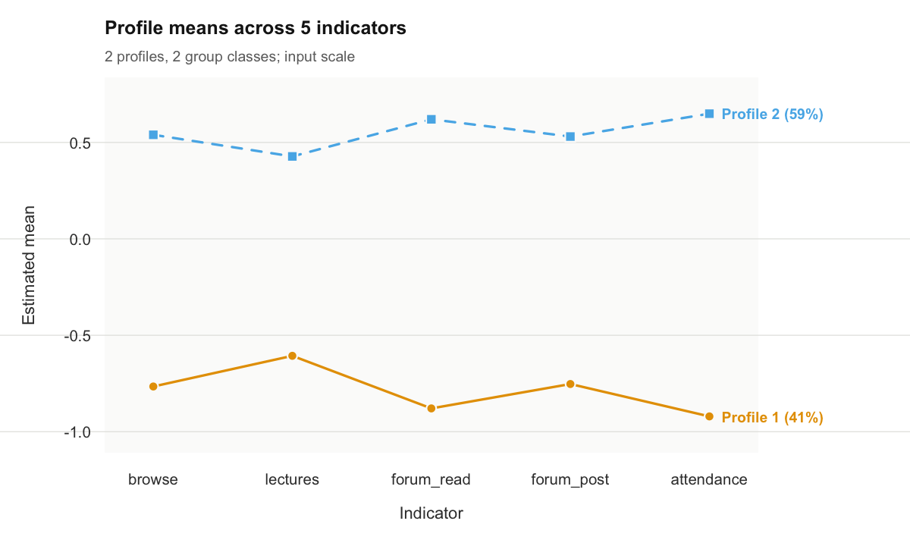
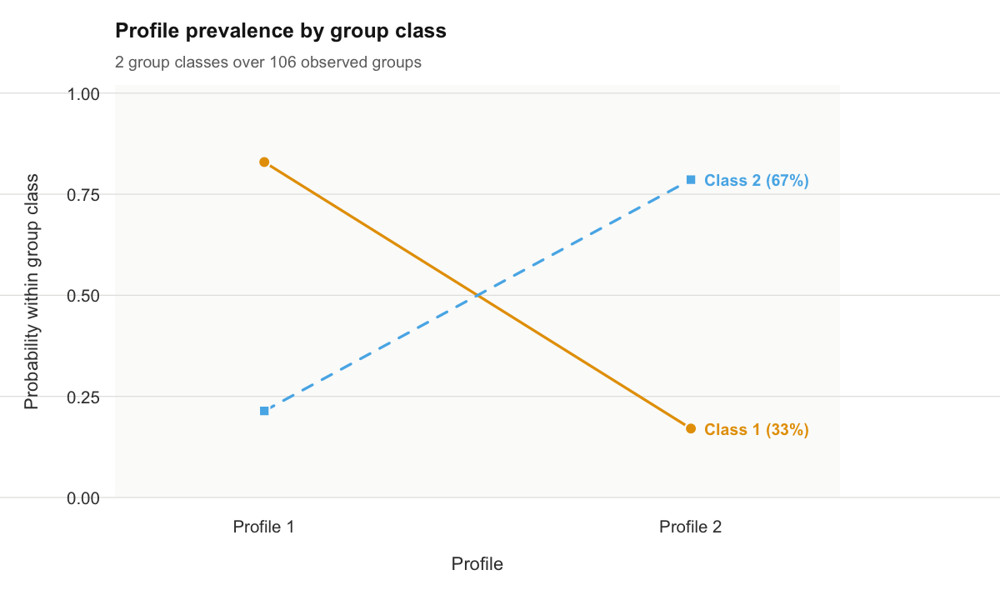
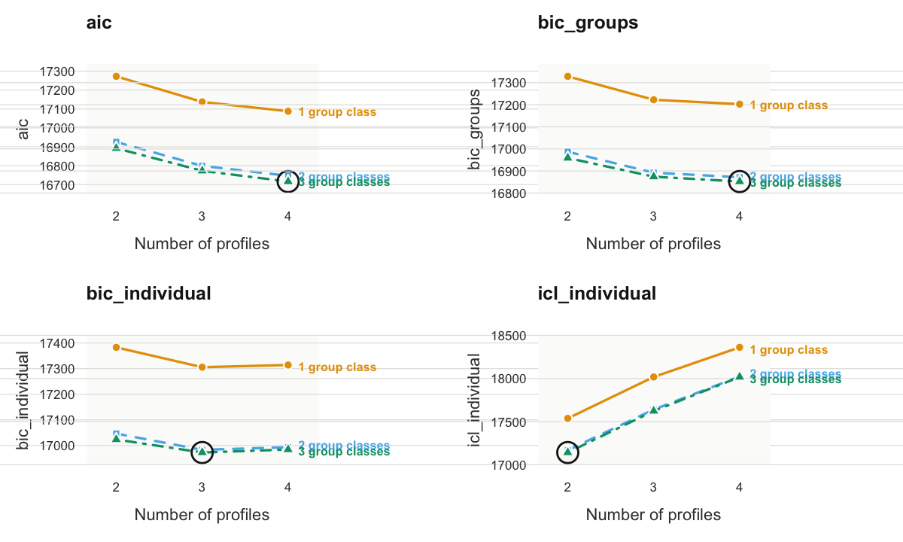
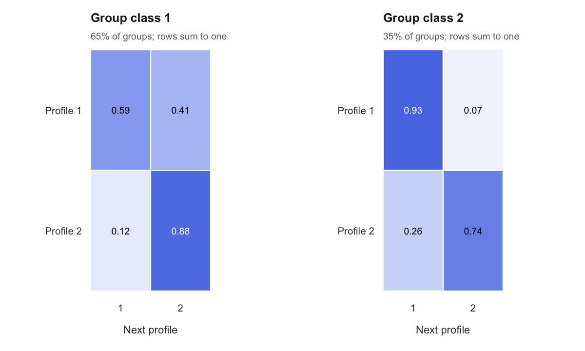
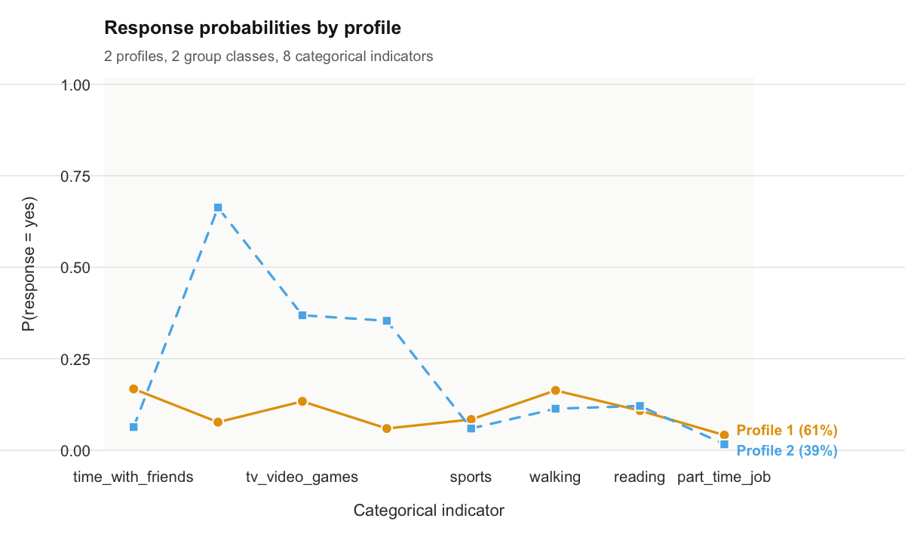

The latents R package provides functions for fitting multilevel latent profile analysis, latent class, and latent transition models for continuous, categorical, and mixed-type variables. Models are estimated by expectation-maximization, handle missing data, and provide standard and robust standard errors. Model selection is supported by information criteria, entropy, classification diagnostics, and a parametric bootstrap likelihood ratio test. Covariates can be related to latent class membership using three-step methods with correction for classification error. Latent transition models estimate transitions between latent profiles across ordered occasions and are compatible with the ‘tna’ package for network and sequence analysis. The multilevel mixture formulation follows Vermunt (2003) doi:10.1111/j.0081-1750.2003.t01-1-00131.x.
Multilevel latent profile analysis (MLPA)
Multilevel latent profile analysis (MLPA) is a model-based method for identifying unobserved subgroups in continuous multivariate data when observations are nested within higher-level units. It is applicable to designs such as repeated measurements within individuals, students within schools, and patients within clinics. In these settings, observations from the same unit may be dependent, and the distribution of latent profiles may vary systematically between units.
Ordinary latent profile analysis represents heterogeneity among observations through a finite mixture of distributions. Each component, or latent profile, is characterized by a set of indicator means and variances. The two-level formulation implemented in multilpa() extends this representation by introducing latent classes at the group level. Observation-level profiles describe patterns in the indicators; group-level classes describe differences in the probabilities of those profiles. This allows the analysis to distinguish variation among observations from variation in profile composition across groups.
For example, in repeated measurements of student engagement, an observation-level profile may represent a pattern of relatively high activity across several indicators. A student-level class may then represent students whose observations frequently belong to that profile. Membership in this student class does not require every observation from a student to have the same engagement profile. The distinction is useful whenever within-person variation is itself part of the research question.
The latents package provides estimation, result extraction, visualization, and diagnostic procedures for this two-level mixture. Its extensions include categorical and mixed indicators, membership covariates, missing-indicator likelihoods, staged estimation, and latent transition analysis. This tutorial develops the continuous two-level model first, then examines these extensions in relation to their analytical purposes.
Model formulation and scope
Observation-level profiles and group-level classes
Let denote the vector of continuous indicators for observation in group . Let denote its latent profile, with possible values, and let denote the latent class of the group, with possible values. In the Gaussian measurement model,
The mean vector describes the location of profile across indicators, and describes variation within that profile. At the group level, the parameters
describe the conditional profile probabilities and group-class proportions, respectively. The profile probabilities sum to one within each group class, and the group-class proportions sum to one across classes.
Under the model’s conditional independence assumptions, the contribution of group to the likelihood is
This expression makes the two levels explicit. The inner mixture combines the observation-level profiles. The outer mixture combines the group classes, each with its own distribution over those profiles. Observations in a group share the same latent group class; integrating over that class induces dependence among them.
Measurement assumptions
The measurement parameters are shared across group classes. Thus, profile has the same indicator means and covariance matrix in every class. This measurement-invariance assumption gives the conditional profile probabilities a common interpretation: differences between group classes concern the prevalence of the same profiles.
By default, the covariance matrices are diagonal. For Gaussian indicators, this implies that indicators are independent conditional on profile membership, an assumption commonly called local independence. A full covariance specification permits residual associations within profiles. The choice affects both the interpretation of the profiles and the number of profiles that may be needed to describe the data.
The basic MLPA model also assumes independence of observations within a group conditional on its latent group class, after marginalizing over the observation profiles. It describes a group’s composition without estimating a direct dependence on the preceding observation. A latent transition model introduces this temporal dependence explicitly.
When the model is appropriate
MLPA is relevant when the research objective concerns both multivariate profiles at the lower level and systematic differences in profile composition at the higher level. The choice of levels follows the study design: an observation might be a measurement occasion, a student, or a clinical encounter, while its group might be a person, a school, or a clinic.
The model implemented here represents higher-level heterogeneity through discrete latent classes. It therefore entails a substantive assumption about how group differences can be represented. The presence of clustering alone does not establish that a particular number of latent group classes is warranted. That specification must be evaluated together with the measurement model and the observed data.
Installation and data preparation
The development version can be installed from the package repository. This installation command is provided for reference and is not evaluated when the tutorial is rendered.
install.packages("remotes")
remotes::install_github("mohsaqr/latents")Example data and variables
The tutorial uses course_engagement, a simulated dataset containing 1,422 course enrolments from 106 students across 32 courses. Each row represents one student’s enrolment in one course, with up to fifteen enrolments per student. Enrolments form Level 1 and students form Level 2.
head(course_engagement)
#> student course sequence browse lectures forum_read forum_post attendance previous_grade
#> 1 1 23 1 0.73 -0.08 0.30 0.67 0.72 0.54
#> 2 1 19 2 0.68 0.53 -0.02 -0.55 0.70 -0.71
#> 3 1 4 3 -1.51 -0.51 -0.91 -0.80 -0.97 1.98
#> 4 1 18 4 0.64 -1.02 -1.62 -1.20 -1.26 -1.42
#> 5 1 16 5 -0.94 -0.37 -0.71 -0.28 -1.52 -0.67
#> 6 1 29 6 -0.36 -0.46 -0.77 -0.43 -1.34 -0.40
#> engagement student_type
#> 1 engaged wavering
#> 2 engaged wavering
#> 3 disengaged wavering
#> 4 disengaged wavering
#> 5 disengaged wavering
#> 6 disengaged waveringFive indicators describe browsing, lecture activity, forum reading, forum posting, and attendance. The indicators were simulated as continuous values, with parameters intended to represent activity on a log-count scale, and then standardized within course and rounded to two decimal places. The simulation does not generate raw event counts or apply a log1p() transformation. An indicator value of zero therefore corresponds to the course average; a value of one corresponds to one standard deviation above that average. The estimated profiles describe engagement relative to other enrolments in the same course.
The student variable identifies the groups used in the likelihood. The sequence variable records the ordering of enrolments within each student and will be used for the longitudinal extension. The variable previous_grade records achievement before the enrolment and will be introduced as an external variable in subsequent analyses.
The generating labels, engagement and student_type, are also available because the dataset is simulated. They are excluded from estimation and used only to examine recovery of the known structure. In empirical applications, the latent classifications generally have no directly observed equivalent.
Data structure and initial inspection
Data should be arranged with one row per Level-1 observation, indicator variables in columns, and an identifier linking observations to their Level-2 units. Indicator selection determines the dimensions along which profiles can differ. The choice should follow the construct being studied, with inspection of distributions, transformations, missingness, and potentially redundant indicators before estimation.
The descriptives() function provides indicator summaries and intraclass correlations when a group identifier is supplied.
descriptives(course_engagement, vars = vars, id = "student")
#> variable n n_missing mean sd min max n_distinct n_groups icc
#> 1 browse 1422 0 -2.81e-05 0.989 -3.14 2.49 398 106 0.1923
#> 2 lectures 1422 0 -4.22e-05 0.989 -2.91 3.22 399 106 0.0878
#> 3 forum_read 1422 0 7.03e-05 0.989 -2.73 2.81 400 106 0.2240
#> 4 forum_post 1422 0 -2.11e-05 0.989 -2.61 3.10 397 106 0.1503
#> 5 attendance 1422 0 7.74e-05 0.989 -2.45 2.41 401 106 0.2215The ICC summarizes the proportion of variation in an indicator attributable to between-group differences. The nonzero ICCs in this example indicate variation between students in their indicator levels. This is useful descriptive evidence of clustering, although it does not identify the number or nature of latent student classes. Limited between-group variation in individual indicator means also does not exclude differences in more complex multivariate patterns.
Course enrolments additionally share course membership. The model below uses student as its grouping variable and does not estimate a crossed student-by-course structure. Standardization within course defines the indicator scale but does not in general account for every source of course-related dependence.
Specifying and estimating a two-level model
The initial specification contains two observation-level profiles and two group-level classes. The purpose of this fit is to establish an interpretable reference model before comparing alternative specifications.
fit <- multilpa(
data = course_engagement,
vars = vars,
id = "student",
n_profiles = 2,
n_group_classes = 2,
variance_model = "varying",
n_starts = 10,
seed = 1
)
get_results(fit)
#> profile indicator mean variance standard_deviation
#> 1 1 browse -0.766 0.528 0.727
#> 2 1 lectures -0.606 0.538 0.734
#> 3 1 forum_read -0.879 0.363 0.603
#> 4 1 forum_post -0.753 0.421 0.649
#> 5 1 attendance -0.921 0.374 0.611
#> 6 2 browse 0.540 0.590 0.768
#> 7 2 lectures 0.427 0.845 0.919
#> 8 2 forum_read 0.620 0.481 0.694
#> 9 2 forum_post 0.531 0.689 0.830
#> 10 2 attendance 0.649 0.384 0.620The arguments n_profiles and n_group_classes specify and , respectively. Setting n_group_classes = 1 reduces the model to a single-level profile analysis: there is then one common distribution over profiles, and no latent group-class heterogeneity.
With variance_model = "varying", each profile has its own indicator variances. With variance_model = "equal", the variance of a given indicator is constrained to be equal across profiles, while different indicators can retain different variances. In the default diagonal model, both specifications set within-profile covariances to zero.
Estimation uses the expectation-maximization algorithm. Its expectation step evaluates latent membership probabilities under the current parameters, and its maximization step updates parameters using those probabilities. Iteration continues until the convergence criterion is met or the iteration limit is reached.
Because mixture likelihoods can have local maxima, estimation is repeated from multiple starting values. Here, n_starts = 10 specifies ten starts and seed = 1 makes the starting procedure reproducible for the same input and row order. Convergence and replication across starts are inspected below; a converged fit alone does not establish that the best attainable likelihood has been found.
Inspecting and interpreting the estimated structure
Measurement profiles
get_results(fit) returns the measurement parameters, with one row for each profile and indicator. Means describe the location of a profile, while variances describe dispersion within it. The default plot displays the profile means across indicators.
plot(fit)
plot of chunk profile-plot
In this solution, profile 2 has the higher engagement pattern and profile 1 the lower engagement pattern. Because the indicators were standardized within course, the separation concerns relative activity within courses. The interpretation should be based on the configuration of means across all indicators, together with within-profile dispersion, rather than on a single indicator or the numerical profile label.
Profile numbers are arbitrary identifiers. A different initialization or model specification can reverse their numbering without changing the substantive solution. Comparisons between fits therefore require matching the measurement patterns before comparing class-specific parameters.
Conditional profile probabilities
The higher-level structure is inspected through the probabilities of the observation profiles within each group class.
get_results(fit, "profile_probabilities")
#> group_class profile probability group_class_probability
#> 1 1 1 0.829 0.325
#> 2 1 2 0.171 0.325
#> 3 2 1 0.214 0.675
#> 4 2 2 0.786 0.675
plot(fit, what = "probabilities")
plot of chunk probabilities
The probability column contains the estimates of . Student class 1 assigns approximately 83% probability to the less engaged profile, whereas student class 2 assigns approximately 79% probability to the more engaged profile. These classes describe different engagement compositions among students while retaining a shared definition of engagement at the enrolment level.
The group_class_probability column contains the estimates of , or the proportion of students in each class. These are group-level proportions. They should be distinguished from enrolment-level profile proportions, particularly when students contribute different numbers of observations.
Posterior membership and classification
The fitted model yields posterior probabilities at both levels. Observation-level probabilities quantify membership in each profile using the fitted multilevel structure; group-level probabilities quantify membership in each student class using the observations belonging to that student. Observation-level probabilities incorporate uncertainty in the group’s class.
head(get_results(fit, "posteriors", format = "wide"))
#> row group profile posterior_profile_1 posterior_profile_2
#> 1 1 1 2 0.000444 1.00e+00
#> 2 2 1 2 0.014858 9.85e-01
#> 3 3 1 1 0.999998 2.42e-06
#> 4 4 1 1 0.999996 3.86e-06
#> 5 5 1 1 0.999994 5.75e-06
#> 6 6 1 1 0.999977 2.28e-05
head(get_results(fit, "assignments", data = course_engagement))
#> student course sequence browse lectures forum_read forum_post attendance previous_grade
#> 1 1 23 1 0.73 -0.08 0.30 0.67 0.72 0.54
#> 2 1 19 2 0.68 0.53 -0.02 -0.55 0.70 -0.71
#> 3 1 4 3 -1.51 -0.51 -0.91 -0.80 -0.97 1.98
#> 4 1 18 4 0.64 -1.02 -1.62 -1.20 -1.26 -1.42
#> 5 1 16 5 -0.94 -0.37 -0.71 -0.28 -1.52 -0.67
#> 6 1 29 6 -0.36 -0.46 -0.77 -0.43 -1.34 -0.40
#> engagement student_type profile group_class uncertainty posterior_profile_1
#> 1 engaged wavering 2 1 4.44e-04 0.000444
#> 2 engaged wavering 2 1 1.49e-02 0.014858
#> 3 disengaged wavering 1 1 2.42e-06 0.999998
#> 4 disengaged wavering 1 1 3.86e-06 0.999996
#> 5 disengaged wavering 1 1 5.75e-06 0.999994
#> 6 disengaged wavering 1 1 2.28e-05 0.999977
#> posterior_profile_2
#> 1 1.00e+00
#> 2 9.85e-01
#> 3 2.42e-06
#> 4 3.86e-06
#> 5 5.75e-06
#> 6 2.28e-05
get_results(fit, "entropy")
#> level n_classes n_units entropy_sum relative_entropy
#> 1 individuals 2 1422 60.94 0.938
#> 2 groups 2 106 4.44 0.940The assignments table records the most probable profile and group class. Such modal assignments simplify presentation but discard part of the posterior information. An observation with profile probabilities 0.51 and 0.49 has substantially more classification uncertainty than one with probabilities 0.99 and 0.01, although both receive a single assigned profile.
Relative entropy summarizes separation at each level. Values approaching one indicate more concentrated posterior membership probabilities. In this example, relative entropy is approximately 0.94 at both levels. Entropy characterizes classification precision under the fitted model; it does not establish the adequacy of the measurement assumptions or select the correct class count.
get_results(fit, "counts")
#> level class effective_count effective_proportion
#> 1 individuals 1 587.9 0.413
#> 2 individuals 2 834.1 0.587
#> 3 groups 1 34.5 0.325
#> 4 groups 2 71.5 0.675Effective class counts are obtained by summing posterior membership probabilities. They need not be integers and differ conceptually from counts based on modal assignments. Small effective classes may provide limited information for estimating means, variances, and membership parameters, and should be evaluated for stability and substantive plausibility.
Recovery of the generating structure
For simulated data, classification can additionally be compared with the known generating labels.
get_results(fit, "assignments", data = course_engagement,
truth = c("engagement", "student_type"))
#> assignment class truth value n proportion
#> 1 profile 1 engagement disengaged 569 0.9726
#> 2 profile 2 engagement disengaged 16 0.0274
#> 3 profile 1 engagement engaged 17 0.0203
#> 4 profile 2 engagement engaged 820 0.9797
#> 5 group_class 1 student_type committed 1 0.0161
#> 6 group_class 2 student_type committed 61 0.9839
#> 7 group_class 1 student_type wavering 34 0.7727
#> 8 group_class 2 student_type wavering 10 0.2273The enrolment-level comparison uses engagement, and the student-level comparison uses student_type, counting each student once. Agreement is interpreted after allowing for arbitrary label permutations. This analysis describes recovery under the specific simulation conditions; in empirical data, validation instead relies on the fitted structure, diagnostics, substantive evidence, and, where available, replication.
Evaluating the model
Convergence and stability across initializations
The starts table records the optimization results for the fitted model.
get_results(fit, "starts")
#> start log_likelihood converged iterations error boundary
#> 1 1 -8440 TRUE 10 <NA> FALSE
#> 2 2 -8440 TRUE 10 <NA> FALSE
#> 3 3 -8440 TRUE 10 <NA> FALSE
#> 4 4 -8440 TRUE 13 <NA> FALSE
#> 5 5 -8440 TRUE 10 <NA> FALSE
#> 6 6 -8440 TRUE 12 <NA> FALSE
#> 7 7 -8440 TRUE 10 <NA> FALSE
#> 8 8 -8440 TRUE 8 <NA> FALSE
#> 9 9 -8440 TRUE 10 <NA> FALSE
#> 10 10 -8440 TRUE 9 <NA> FALSEThe relevant evidence includes whether the selected solution converged, how often the best log likelihood was attained, and whether competing solutions have materially different likelihoods or classifications. Repeated attainment of the best value supports numerical stability. A solution attained only once may require additional starts or a closer examination of the fitted parameters.
The sensitivity() function extends this inspection by refitting under different seeds and comparing the resulting solutions.
sensitivity(fit, seeds = 1:3)
#> seed log_likelihood converged iterations optimum best agreement
#> 1 1 -8440 TRUE 8 1 TRUE 1
#> 2 2 -8440 TRUE 14 1 TRUE 1
#> 3 3 -8440 TRUE 13 1 TRUE 1Replication across seeds strengthens confidence in the numerical solution without proving a global maximum. The number of starts should be increased when the candidate model is difficult to estimate or the best likelihood is poorly replicated.
Local dependence and covariance specification
Under a diagonal measurement model, the latent profiles account for all modeled associations between indicators. Residual associations assess the dependence that remains after fitting the profiles.
get_results(fit, "residuals", by = "overall")
#> profile indicator_1 indicator_2 kind observed expected residual effective_n statistic
#> 1 overall forum_read attendance gaussian 0.21588 0 0.21588 1422 8.2620
#> 2 overall lectures attendance gaussian 0.19234 0 0.19234 1422 7.3367
#> 3 overall browse attendance gaussian 0.18077 0 0.18077 1422 6.8851
#> 4 overall forum_post attendance gaussian 0.17239 0 0.17239 1422 6.5592
#> 5 overall browse forum_read gaussian 0.06266 0 0.06266 1422 2.3634
#> 6 overall browse forum_post gaussian -0.02511 0 -0.02511 1422 -0.9462
#> 7 overall browse lectures gaussian -0.02126 0 -0.02126 1422 -0.8010
#> 8 overall forum_read forum_post gaussian 0.01986 0 0.01986 1422 0.7482
#> 9 overall lectures forum_post gaussian 0.01709 0 0.01709 1422 0.6438
#> 10 overall lectures forum_read gaussian 0.00192 0 0.00192 1422 0.0724
#> df p_value p_adjusted
#> 1 NA 1.43e-16 1.43e-16
#> 2 NA 2.19e-13 2.19e-13
#> 3 NA 5.78e-12 5.78e-12
#> 4 NA 5.41e-11 5.41e-11
#> 5 NA 1.81e-02 1.81e-02
#> 6 NA 3.44e-01 3.44e-01
#> 7 NA 4.23e-01 4.23e-01
#> 8 NA 4.54e-01 4.54e-01
#> 9 NA 5.20e-01 5.20e-01
#> 10 NA 9.42e-01 9.42e-01In this simulation, attendance was constructed from activity measures, making residual association substantively plausible. Residuals should be interpreted by their magnitude and pattern as well as their inferential summaries. Persistent association involving particular indicators can motivate reconsideration of the measurement specification.
A full covariance model estimates within-profile associations explicitly while retaining the same number of profiles and group classes.
dependent <- multilpa(
course_engagement, vars, "student",
n_profiles = 2, n_group_classes = 2,
variance_model = "varying", covariance_model = "full",
n_starts = 10, seed = 1
)
rbind(
diagonal = get_results(fit, "information_criteria"),
full = get_results(dependent, "information_criteria")
)
#> log_likelihood n_parameters aic kic bic_groups bic_individual sabic_groups
#> diagonal -8440 23 16926 16952 16987 17047 16914
#> full -8313 43 16712 16758 16827 16938 16691
#> sabic_individual caic_groups caic_individual awe_groups awe_individual icl_groups
#> diagonal 16974 17010 17070 17172 17404 16996
#> full 16802 16870 16981 17165 17564 16835
#> icl_individual clc_groups clc_individual
#> diagonal 17168 16889 17002
#> full 17123 16635 16811
get_results(dependent, "residuals", by = "overall")
#> profile indicator_1 indicator_2 kind observed expected residual effective_n statistic
#> 1 overall forum_read forum_post gaussian 0.02438 0.02439 -1.32e-05 1422 -4.97e-04
#> 2 overall lectures forum_post gaussian 0.02010 0.02011 -1.20e-05 1422 -4.50e-04
#> 3 overall forum_post attendance gaussian 0.18793 0.18794 -1.09e-05 1422 -4.25e-04
#> 4 overall lectures forum_read gaussian 0.00887 0.00888 -8.96e-06 1422 -3.38e-04
#> 5 overall lectures attendance gaussian 0.20504 0.20505 -7.49e-06 1422 -2.94e-04
#> 6 overall browse forum_post gaussian -0.01866 -0.01865 -6.84e-06 1422 -2.58e-04
#> 7 overall forum_read attendance gaussian 0.24180 0.24180 -4.19e-06 1422 -1.68e-04
#> 8 overall browse lectures gaussian -0.01380 -0.01379 -4.10e-06 1422 -1.55e-04
#> 9 overall browse forum_read gaussian 0.07442 0.07441 1.16e-06 1422 4.40e-05
#> 10 overall browse attendance gaussian 0.20382 0.20382 6.60e-07 1422 2.59e-05
#> df p_value p_adjusted
#> 1 NA 1 1
#> 2 NA 1 1
#> 3 NA 1 1
#> 4 NA 1 1
#> 5 NA 1 1
#> 6 NA 1 1
#> 7 NA 1 1
#> 8 NA 1 1
#> 9 NA 1 1
#> 10 NA 1 1The information criteria compare improvement in likelihood with the additional parameters required by the full covariance model. The residual table indicates how much of the observed association the revised specification accounts for. Near-zero residuals are expected when those associations are directly fitted and do not independently establish overall model adequacy.
Covariance specification and class enumeration are related. Additional diagonal profiles can approximate associations that a more flexible covariance structure represents within profiles. Consequently, the number of profiles should be interpreted in the context of the measurement assumptions under which it was selected.
Selecting the numbers of profiles and group classes
Class enumeration evaluates candidate values of both and . The following analysis fits two to four observation profiles and one to three group classes under the diagonal specification.
candidates <- enumerate_classes(
course_engagement, vars, "student",
n_profiles = 2:4, n_group_classes = 1:3,
n_starts = 10, seed = 1
)
candidates
#> Class enumeration: 9 candidate models
#> n_profiles n_group_classes model log_likelihood n_parameters aic bic_groups bic_individual
#> 2 1 VVI -8615 21 17272 17328 17383
#> 3 1 VVI -8537 32 17137 17222 17306
#> 4 1 VVI -8501 43 17088 17203 17314
#> 2 2 VVI -8440 23 16926 16987 17047
#> 3 2 VVI -8365 35 16799 16892 16983
#> 4 2 VVI -8326 47 16746 16872 16994
#> 2 3 VVI -8421 25 16892 16959 17024
#> 3 3 VVI -8348 38 16773 16874 16973
#> 4 3 VVI -8307 51 16716 16852 16985
#> icl_individual profile_entropy group_entropy converged boundary n_best_replicated
#> 17537 0.922 NA TRUE FALSE 10
#> 18018 0.772 NA TRUE FALSE 10
#> 18361 0.735 NA TRUE FALSE 8
#> 17168 0.938 0.940 TRUE FALSE 10
#> 17640 0.790 0.943 TRUE FALSE 10
#> 18023 0.739 0.937 TRUE FALSE 10
#> 17142 0.940 0.816 TRUE FALSE 10
#> 17623 0.792 0.797 TRUE FALSE 10
#> 18017 0.738 0.823 TRUE FALSE 10
#> No candidate is selected automatically. Compare one convention consistently.
get_results(candidates, "criteria")
#> criterion convention n_profiles n_group_classes model value
#> 1 aic <NA> 4 3 VVI 16716
#> 2 kic <NA> 4 3 VVI 16770
#> 3 bic groups 4 3 VVI 16852
#> 4 bic individuals 3 3 VVI 16973
#> 5 sabic groups 4 3 VVI 16691
#> 6 sabic individuals 4 3 VVI 16823
#> 7 caic groups 4 3 VVI 16903
#> 8 caic individuals 3 3 VVI 17011
#> 9 awe groups 3 2 VVI 17169
#> 10 awe individuals 2 3 VVI 17398
#> 11 icl groups 4 2 VVI 16881
#> 12 icl individuals 2 3 VVI 17142
#> 13 clc groups 4 3 VVI 16656
#> 14 clc individuals 2 3 VVI 16960
plot(candidates)
plot of chunk enumeration
Information criteria balance the fitted likelihood against model complexity; smaller values are preferred within a given criterion. For example, BIC takes the form , where is the maximized log likelihood and is the number of estimated parameters. In a multilevel mixture, the choice of sample size in the penalty requires attention. The package reports criteria under both group-count and observation-count conventions. For the single-level LPA specification, the individual-count BIC is the relevant version.
Candidate models should be assessed jointly for information criteria, convergence, replication of the likelihood, effective class sizes, residual dependence, and substantive interpretability. A criterion that continues to improve at the boundary of the grid indicates that the examined grid has not located an interior optimum for that criterion. It does not by itself justify adopting the largest fitted model.
An individual candidate can be retrieved for the same inspection applied to the initial fit.
candidate <- candidate_fit(candidates, n_profiles = 2, n_group_classes = 2)
get_results(candidate)
#> profile indicator mean variance standard_deviation
#> 1 1 browse -0.766 0.528 0.727
#> 2 1 lectures -0.606 0.538 0.734
#> 3 1 forum_read -0.879 0.363 0.603
#> 4 1 forum_post -0.753 0.421 0.649
#> 5 1 attendance -0.921 0.374 0.611
#> 6 2 browse 0.540 0.590 0.768
#> 7 2 lectures 0.427 0.845 0.919
#> 8 2 forum_read 0.620 0.481 0.694
#> 9 2 forum_post 0.531 0.689 0.830
#> 10 2 attendance 0.649 0.384 0.620For supported nested models differing by one class at one level, bootstrap_lrt() provides a parametric bootstrap likelihood-ratio comparison. It simulates data from the smaller model and estimates both models for each replicate, constructing an empirical reference distribution for the likelihood-ratio statistic. The following optional example is not evaluated during rendering because it requires hundreds of additional fits.
smaller <- multilpa(course_engagement, vars, "student",
n_profiles = 2, n_group_classes = 2, seed = 1)
larger <- multilpa(course_engagement, vars, "student",
n_profiles = 3, n_group_classes = 2, seed = 1)
bootstrap_lrt(smaller, larger, iter = 199, seed = 42)Both models must be fitted to complete data. The package withholds the bootstrap p-value if any replicate fails to converge, making optimization of the replicate fits part of the validity of the comparison.
Parameter uncertainty
Parameter uncertainty is assessed after specifying the model. parameter_inference() provides standard errors and Wald intervals using the observed information matrix by default.
inference <- parameter_inference(fit)
head(inference)
#> level outcome term parameter estimate standard_error statistic p_value
#> 1 measurement profile_1 browse mean -0.766 0.0312 -24.5 7.50e-133
#> 2 measurement profile_1 lectures mean -0.606 0.0309 -19.6 1.33e-85
#> 3 measurement profile_1 forum_read mean -0.879 0.0262 -33.5 1.48e-246
#> 4 measurement profile_1 forum_post mean -0.753 0.0277 -27.2 8.47e-163
#> 5 measurement profile_1 attendance mean -0.921 0.0264 -34.8 6.92e-266
#> 6 measurement profile_2 browse mean 0.540 0.0271 19.9 3.33e-88
#> p_adjusted conf_low conf_high
#> 1 7.50e-133 -0.827 -0.704
#> 2 1.33e-85 -0.667 -0.546
#> 3 1.48e-246 -0.931 -0.828
#> 4 8.47e-163 -0.807 -0.698
#> 5 6.92e-266 -0.972 -0.869
#> 6 3.33e-88 0.486 0.593confint(fit) provides confidence intervals, while parameter_inference(fit, vcov_type = "robust") requests a sandwich covariance estimator clustered by the observed groups. These procedures quantify uncertainty conditional on the fitted class count and measurement specification. They do not incorporate uncertainty from choosing among candidate models.
Inference requires an adequately identified solution. A variance estimate at its lower bound or a non-positive-definite information matrix can prevent the package from reporting intervals. Such results should prompt examination of class sizes, parameter constraints, and solution stability. Standard errors are not available for the latent transition models described below.
Covariates and external variables
External variables can be incorporated during estimation or related to an established classification afterward. The distinction concerns whether those variables contribute to estimation of the profile definitions.
Joint estimation of membership regressions
Membership covariates enter through multinomial logistic regressions. In this example, previous_grade varies across enrolments and is specified as a predictor of observation-profile membership.
with_predictors <- multilpa(
course_engagement, vars, "student",
n_profiles = 2, n_group_classes = 2,
profile_covariates = "previous_grade",
n_starts = 10, seed = 1
)
get_results(with_predictors, "coefficients")
#> level outcome term parameter estimate
#> 1 profile profile_1 group_class_1 logit 1.539
#> 2 profile profile_1 group_class_2 logit -1.267
#> 3 profile profile_1 previous_grade logit -0.422
#> 4 group group_class_1 (Intercept) logit -0.763A membership coefficient represents the change in log odds of a profile relative to the reference profile for a one-unit increase in the covariate. Its exponentiation gives the corresponding odds ratio. Interpretation requires identifying the reference category and the measurement pattern associated with each profile. Since previous grade is standardized, a one-unit difference represents one standard deviation on that covariate’s scale.
The joint model estimates membership regression and measurement parameters simultaneously, allowing profile definitions to change when covariates are introduced. For covariates measured at the group level and constant within groups, group_covariates specifies the corresponding regression for group-class membership. The temporal ordering of previous grade supports its use as a prior predictor, but these coefficients remain model-based associations.
Classification-error-corrected three-step analysis
Three-step procedures retain an established measurement solution and account for classification error when relating classes to external variables. three_step() applies the BCH approach to estimating class-specific means; r3step() estimates a corrected membership regression.
three_step(fit, data = course_engagement, outcome = "previous_grade")
#> level method class estimate standard_error conf_low conf_high effective_n
#> 1 individuals bch 1 -0.315 0.0359 -0.385 -0.244 564
#> 2 individuals bch 2 0.222 0.0347 0.154 0.290 810
r3step(fit, data = course_engagement, covariates = "previous_grade")
#> level outcome term estimate standard_error statistic p_value
#> 1 individuals class_1 (Intercept) -0.376 0.0582 -6.46 1.05e-10
#> 2 individuals class_1 previous_grade -0.575 0.0622 -9.25 2.34e-20
#> p_value_adjusted conf_low conf_high
#> 1 NA -0.490 -0.262
#> 2 2.34e-20 -0.697 -0.453The first call compares previous-grade means between enrolment profiles. The argument name outcome identifies the variable whose means are estimated; it does not imply that engagement precedes or causes previous grade. The second call estimates the association of previous grade with profile membership while preserving the original profile definitions.
Differences from the jointly estimated regression are therefore expected: the two procedures use different constraints on the measurement solution. three_step() clusters its variance estimates by group by default, while r3step() uses the observed information by default and offers clustered sandwich inference through vcov_type = "robust".
The supplied data must preserve the original observation order and include the external variables. The package uses shared fitted columns to check alignment between the data and the stored fit.
Missing indicators
Observed-data likelihood estimation is available through missing = "fiml". The example below removes attendance measurements after each student’s twelfth enrolment and fits a full covariance model to the remaining observed information.
engagement_with_na <- transform(
course_engagement,
attendance = ifelse(sequence > 12, NA, attendance)
)
descriptives(engagement_with_na, vars = vars, id = "student")
#> variable n n_missing mean sd min max n_distinct n_groups icc
#> 1 browse 1422 0 -2.81e-05 0.989 -3.14 2.49 398 106 0.1923
#> 2 lectures 1422 0 -4.22e-05 0.989 -2.91 3.22 399 106 0.0878
#> 3 forum_read 1422 0 7.03e-05 0.989 -2.73 2.81 400 106 0.2240
#> 4 forum_post 1422 0 -2.11e-05 0.989 -2.61 3.10 397 106 0.1503
#> 5 attendance 1261 161 5.17e-03 0.992 -2.45 2.41 395 106 0.2233
missing_fit <- multilpa(
engagement_with_na, vars, "student",
n_profiles = 2, n_group_classes = 2,
covariance_model = "full", missing = "fiml",
n_starts = 10, seed = 1
)
get_results(missing_fit)
#> profile indicator mean variance standard_deviation
#> 1 1 browse 0.531 0.600 0.775
#> 2 1 lectures 0.419 0.847 0.921
#> 3 1 forum_read 0.611 0.493 0.702
#> 4 1 forum_post 0.522 0.698 0.836
#> 5 1 attendance 0.634 0.406 0.637
#> 6 2 browse -0.769 0.524 0.724
#> 7 2 lectures -0.607 0.544 0.737
#> 8 2 forum_read -0.885 0.357 0.597
#> 9 2 forum_post -0.757 0.413 0.643
#> 10 2 attendance -0.926 0.398 0.631Each observation contributes the density of its observed indicators, obtained by marginalizing over its missing components. Estimation therefore uses partially observed indicator vectors without imputing values. The resulting inference assumes that the missingness mechanism is ignorable for the fitted analysis; the likelihood option itself does not establish that assumption.
Missing-data handling should be described together with the pattern and extent of missingness and the information available to explain it. Without missing = "fiml", missing indicators produce an error. Membership-covariate models and parametric bootstrap procedures require complete data in this implementation.
Ordered observations and latent transitions
Repeated measurements support distinct questions about profile composition and temporal dynamics. MLPA describes differences between groups in the prevalence of profiles. Latent transition analysis additionally estimates dependence between successive latent profiles.
Inspecting profile sequences
Providing time to multilpa() allows ordered profile assignments to be extracted.
over_time <- multilpa(
course_engagement, vars, "student",
n_profiles = 2, n_group_classes = 2,
time = "sequence", n_starts = 10, seed = 1
)
head(get_results(over_time, "sequences", format = "wide"))
#> group group_class sequence_1 sequence_2 sequence_3 sequence_4 sequence_5 sequence_6
#> 1 1 1 2 2 1 1 1 1
#> 2 2 1 1 1 1 1 1 1
#> 3 3 2 2 2 2 2 2 2
#> 4 4 2 2 2 2 2 2 2
#> 5 5 1 1 1 1 1 1 1
#> 6 6 2 2 1 1 1 2 2
#> sequence_7 sequence_8 sequence_9 sequence_10 sequence_11 sequence_12 sequence_13 sequence_14
#> 1 1 1 1 1 1 1 1 <NA>
#> 2 1 1 1 1 1 1 1 <NA>
#> 3 2 2 2 2 2 2 2 2
#> 4 2 2 2 2 2 2 2 <NA>
#> 5 1 2 1 1 1 1 1 1
#> 6 2 1 1 2 2 2 <NA> <NA>
#> sequence_15
#> 1 <NA>
#> 2 <NA>
#> 3 <NA>
#> 4 <NA>
#> 5 <NA>
#> 6 <NA>These sequences are descriptive summaries based on modal assignments. They facilitate inspection of individual histories but do not estimate a transition process or preserve the complete posterior uncertainty about each sequence.
Estimating a latent transition model
lta() estimates initial profile probabilities and transition probabilities across ordered observations. With multiple group classes, both sets of probabilities may differ between classes.
moves <- lta(
course_engagement, vars, "student",
n_profiles = 2, n_group_classes = 2,
time = "sequence", seed = 1
)
get_results(moves, "initial")
#> group_class profile probability prevalence group_class_probability
#> 1 1 1 0.184 0.220 0.647
#> 2 1 2 0.816 0.780 0.647
#> 3 2 1 0.724 0.769 0.353
#> 4 2 2 0.276 0.231 0.353
get_results(moves, "transitions")
#> group_class from to probability expected_count stable estimated group_class_probability
#> 1 1 1 1 0.5868 108.2 TRUE TRUE 0.647
#> 2 1 1 2 0.4132 76.2 FALSE TRUE 0.647
#> 3 1 2 1 0.1222 81.6 FALSE TRUE 0.647
#> 4 1 2 2 0.8778 586.3 TRUE TRUE 0.647
#> 5 2 1 1 0.9306 330.5 TRUE TRUE 0.353
#> 6 2 1 2 0.0694 24.6 FALSE TRUE 0.353
#> 7 2 2 1 0.2572 27.9 FALSE TRUE 0.353
#> 8 2 2 2 0.7428 80.6 TRUE TRUE 0.353
plot(moves, what = "transitions")
plot of chunk transitions
For group class , a transition probability can be expressed as . Each row of a transition matrix conditions on the preceding profile and sums to one across possible destination profiles. Diagonal entries quantify persistence; off-diagonal entries quantify transitions to other profiles.
The implemented model is first order and time homogeneous: the next profile depends on the preceding profile, with transition probabilities held constant across sequence positions within each group class. Measurement parameters are invariant across occasions, ensuring that a transition refers to movement between profiles with stable definitions.
In this dataset, consecutive observations are successive course enrolments. A transition therefore concerns adjacent observed enrolments, which need not be separated by equal calendar intervals. This distinction is part of the substantive interpretation of the estimated transition probabilities.
The fitted transitions can be exported through get_tna() and get_group_tna() for further analysis with tna. Standard errors, likelihood-ratio testing, and class enumeration are not available for these transition models.
Categorical and mixed measurement models
For categorical indicators, the measurement model estimates category-response probabilities within profiles. Specifying all indicators as categorical yields two-level latent class analysis. Specifying a subset yields a mixture of Gaussian and categorical measurement components.
The student_esm dataset provides repeated reports of leisure activities nested within students. The following example uses prompts from the first week, selected by day <= 6, and fits a two-level latent class model with multilca(), which treats every indicator as categorical.
activities <- c("time_with_friends", "on_social_media", "tv_video_games",
"listened_music", "sports", "walking", "reading",
"part_time_job")
first_week <- subset(student_esm, day <= 6)
lca <- multilca(
first_week, activities, "student",
n_profiles = 2, n_group_classes = 2,
n_starts = 10, seed = 1
)
get_results(lca, "responses")
#> profile indicator category probability threshold
#> 1 1 time_with_friends no 0.8325 1.603
#> 2 2 time_with_friends no 0.9368 2.696
#> 3 1 time_with_friends yes 0.1675 NA
#> 4 2 time_with_friends yes 0.0632 NA
#> 5 1 on_social_media no 0.9233 2.488
#> 6 2 on_social_media no 0.3368 -0.678
#> 7 1 on_social_media yes 0.0767 NA
#> 8 2 on_social_media yes 0.6632 NA
#> 9 1 tv_video_games no 0.8665 1.870
#> 10 2 tv_video_games no 0.6312 0.538
#> 11 1 tv_video_games yes 0.1335 NA
#> 12 2 tv_video_games yes 0.3688 NA
#> 13 1 listened_music no 0.9406 2.763
#> 14 2 listened_music no 0.6463 0.603
#> 15 1 listened_music yes 0.0594 NA
#> 16 2 listened_music yes 0.3537 NA
#> 17 1 sports no 0.9159 2.388
#> 18 2 sports no 0.9406 2.762
#> 19 1 sports yes 0.0841 NA
#> 20 2 sports yes 0.0594 NA
#> 21 1 walking no 0.8366 1.633
#> 22 2 walking no 0.8865 2.056
#> 23 1 walking yes 0.1634 NA
#> 24 2 walking yes 0.1135 NA
#> 25 1 reading no 0.8917 2.108
#> 26 2 reading no 0.8790 1.983
#> 27 1 reading yes 0.1083 NA
#> 28 2 reading yes 0.1210 NA
#> 29 1 part_time_job no 0.9587 3.144
#> 30 2 part_time_job no 0.9838 4.104
#> 31 1 part_time_job yes 0.0413 NA
#> 32 2 part_time_job yes 0.0162 NA
plot(lca, what = "responses")
plot of chunk categorical
The response table describes the probability of each answer conditional on profile membership. These probabilities define the activity profiles. As in the continuous model, get_results(lca, "profile_probabilities") describes how the distribution of those profiles varies between student classes.
A mixed model adds affect ratings as continuous indicators while retaining categorical measurement for the activities.
mixed <- multilpa(
first_week, c("happy", "relaxed", "exhausted", activities), "student",
n_profiles = 2, n_group_classes = 2,
categorical = activities, n_starts = 10, seed = 1
)
get_results(mixed)
#> profile indicator mean variance standard_deviation
#> 1 1 happy 5.98 0.659 0.812
#> 2 1 relaxed 5.77 1.017 1.008
#> 3 1 exhausted 2.33 1.977 1.406
#> 4 2 happy 3.90 1.963 1.401
#> 5 2 relaxed 3.66 1.946 1.395
#> 6 2 exhausted 4.10 2.842 1.686This specification treats the affect ratings as approximately Gaussian within profiles. The measurement table describes their means and variances, while get_results(mixed, "responses") provides the activity-response probabilities. Including affect changes the dimensions represented by the model and can consequently change the substantive meaning of its profiles.
Categorical measurement uses freely estimated category probabilities. Ordered categories do not impose an ordinal regression structure. The choice between continuous and categorical treatment of a rating scale should therefore reflect both its distribution and the measurement assumptions appropriate to the analysis.
Staged estimation
Joint estimation allows the higher-level structure to contribute to estimation of the observation profiles. Staged estimation instead establishes the measurement profiles first and then estimates group classes with those measurement parameters held fixed.
staged <- fit_staged(
course_engagement, vars, "student",
n_profiles = 2, n_group_classes = 2, seed = 1
)
get_results(staged, "stages")
#> stage group_classes fixed log_likelihood parameters
#> 1 measurement 1 <NA> -8615 21
#> 2 membership 2 means, variances -8440 3
#> parameters_with_measurement converged
#> 1 21 TRUE
#> 2 23 TRUEThis separation is useful when a common observation-level representation is to be retained while examining heterogeneity in its distribution across groups. It also connects to the distinction between state diversity and person heterogeneity discussed in the VaSSTra approach. The fit_staged() procedure specifically implements staged estimation of the package’s multilevel mixture; its output should be interpreted within that model.
Standard errors and information criteria from the staged fit are conditional on the fixed measurement parameters. Uncertainty from estimating those parameters in the first stage is not propagated, which should be stated when reporting inferential results.
Retrieving results and reporting an analysis
The package provides a consistent result interface across supported model families. get_results(fit) retrieves the primary measurement table, and the what argument selects other available tables. The names of those tables can be inspected directly.
names(get_results(fit, "all"))
#> [1] "profiles" "responses" "covariances"
#> [4] "profile_probabilities" "counts" "posteriors"
#> [7] "group_posteriors" "assignments" "classification"
#> [10] "average_posteriors" "classification_errors" "bch_weights"
#> [13] "entropy" "residuals" "information_criteria"
#> [16] "model" "stages" "starts"
#> [19] "data"Result tables are returned as base R data frames. get_results(fit, "all") returns them as a named list, summary(fit) provides a printed overview, and report(fit) combines summaries, diagnostics, and plots. These interfaces support both detailed inspection and preparation of tables for reporting.
A methodological report should identify the Level-1 observations and Level-2 units, describe indicator selection and scaling, state the measurement and covariance constraints, and explain treatment of missingness. The estimation account should specify candidate class counts, starting values, convergence criteria, and evidence that the selected likelihood was replicated.
Interpretation should then distinguish the measurement profiles from the higher-level composition classes. Profile means or response probabilities establish the meaning of the observation-level classes; conditional profile probabilities establish the meaning of the group-level classes. Effective class sizes, posterior classification uncertainty, residual diagnostics, and the rationale for selecting the final model provide the evidence needed to assess that interpretation.
Additional package vignettes develop the individual parts of this workflow in greater detail.
Authors and citation
latents is written by Mohammed Saqr and Sonsoles López-Pernas. Mohammed Saqr maintains the package. Questions and bug reports can be submitted through the repository issue tracker.
The source repository contains further worked examples and software comparison studies. The package citation is available through citation("latents").